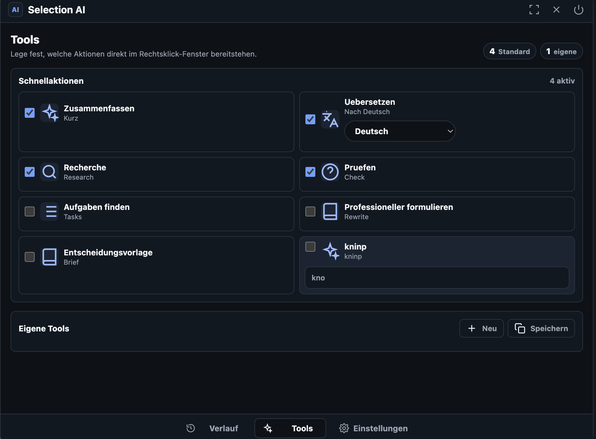

macOS
Für Macs mit Apple Chip (M1 oder neuer)
Desktop-App
Installiere Selection AI auf deinem Computer, melde dich mit deinem Konto an und nutze deine Werkzeuge, Chats und Einstellungen geräteübergreifend.
Für Macs mit Apple Chip (M1 oder neuer)
Für Windows 10 und 11 (64 Bit)
Produktoberfläche
Toolpool, eigene Prompts und Schnellaktionen.

Installation
Öffne die geladene ZIP-Datei und verschiebe Selection AI unter macOS in „Programme“. Unter Windows startest du die enthaltene Anwendung.
Erlaube Bedienungshilfen und Bildschirmaufnahme, damit Selection AI markierte Texte und Screenshots verarbeiten kann.
Melde dich mit deinem Selection-AI-Konto an. Verlauf, Tools und Einstellungen werden anschließend aus der Cloud geladen.